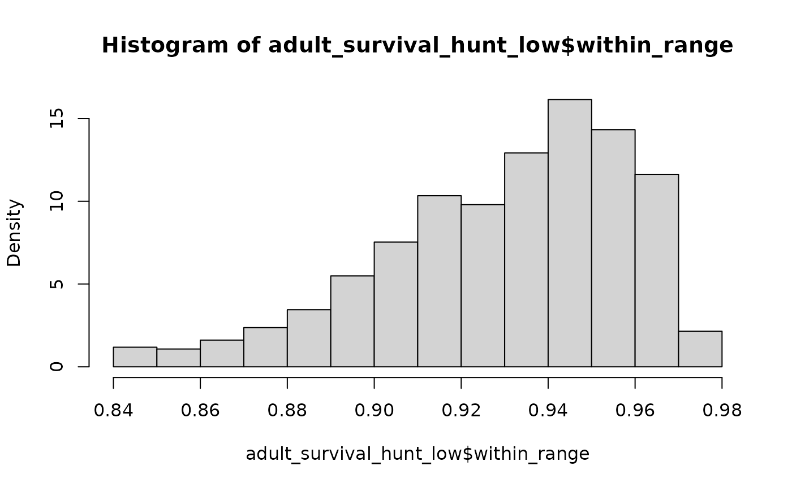

Adult survival scenarios
Source:vignettes/a03_Adult-survival-scenarios.Rmd
a03_Adult-survival-scenarios.RmdEstablish distribution of plausible adult survival values in the following scenarios:
- Unharvested, with and without recovery actions.
- Lightly harvested, with and without recovery actions.
- Intesively harvested, with and without recovery actions.
To be able to compare with and without recovery actions we need to include density dependence in the matrix projection models.
We use estimates of longevity to establish mean and range of annual adult female survival in each scenario.
Unharvested,
mean 57.1 years, range 20 to 70 years, beta distribution.Lightly harvested (less than 2.5% per year),
mean 30 years, range 20 to 70 years, beta distribution.Intensively harvested (greater than 5% per year),
mean 22 years, range 20 to 70 years, half-normal distribution.
adult_survival <- TACAR::make_beta(survival_mean = 0.976987,
survival_min = 0.9215,
survival_max = 0.98153,
alpha = 40, beta = 40
)
#> Warning in TACAR::make_beta(survival_mean = 0.976987, survival_min = 0.9215, :
#> Less than 50% of survival values are within the desired range. Rescaling
#> values.
hist(adult_survival$within_range)
mean(adult_survival$within_range, na.rm = TRUE)
#> [1] 0.9720561
adult_survival_hunt_low <- TACAR::make_beta(survival_mean = 0.95244,
survival_min = 0.9215,
survival_max = 0.98153,
alpha = 400, beta = 400
)
hist(adult_survival_hunt_low$within_range)
mean(adult_survival_hunt_low$within_range, na.rm = TRUE)
#> [1] 0.9524175
adult_survival_hunt_high <- TACAR::make_half_normal(survival_mean = 0.96,
survival_min = 0.92,
survival_max = 0.97339)
# Plot the distribution
hist(adult_survival_hunt_high$survival_values, probability = TRUE)
mean(adult_survival_hunt_high$survival_values, na.rm = TRUE)
#> [1] 0.932805